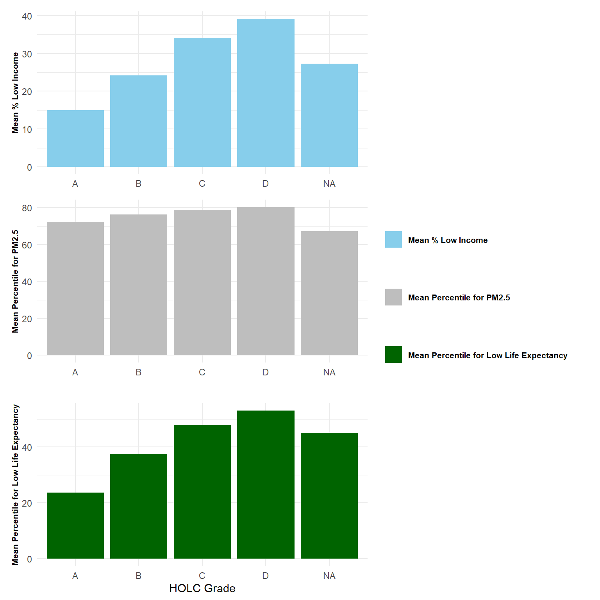
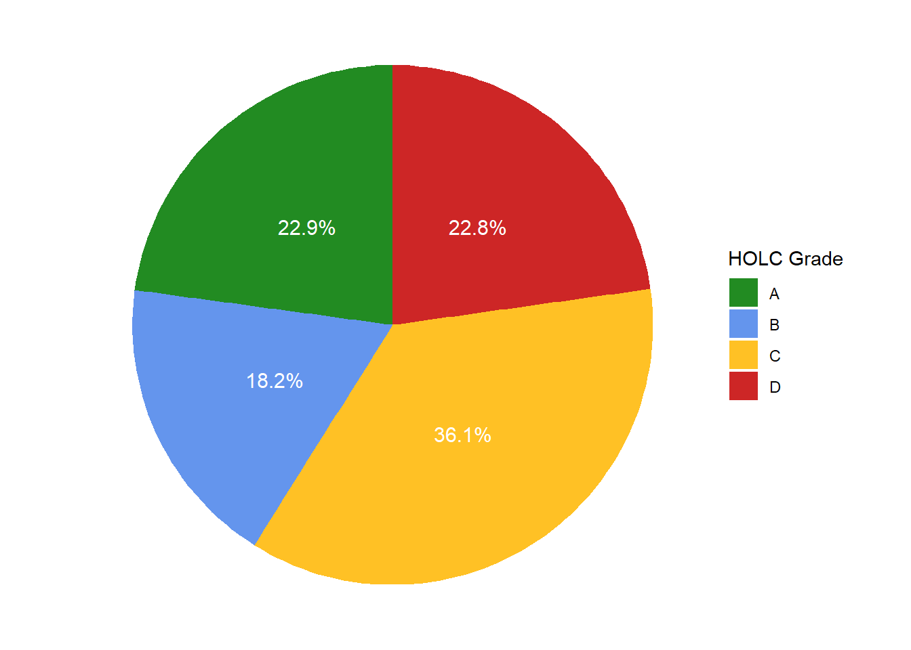

Legacy of redlining in environmental (in)justice and biodiversity observations
Author
Xue Yan
Published
October 17, 2024
Library and data preparation
1. Load libraries and data
Code
# Load librarieslibrary(here)library(tidyverse)library(sf)library(viridisLite)library(tmap)library(tmaptools) # for reading OpenStreetMap datalibrary(knitr) # for generating tablelibrary(scales) # for using function "percent()"library(ggplot2) library(patchwork) # for combining multiple ggplot2 graphicslibrary(testthat)# Load dataejscreen <- sf::st_read(here::here("data","data", "ejscreen", "EJSCREEN_2023_BG_StatePct_with_AS_CNMI_GU_VI.gdb"), quiet =TRUE)HOLC_grade <- sf::st_read(here::here("data","data","mapping-inequality","mapping-inequality-los-angeles.json"),quiet =TRUE)gbif_birds_LA <- sf::st_read(here::here("data","data","gbif-birds-LA", "gbif-birds-LA.shp"), quiet =TRUE)# Filter ejscreen to LA countyLA <- ejscreen %>% dplyr::filter(CNTY_NAME %in%c("Los Angeles County"))
2. Check and transform coordinate reference systems
# Check if coordinate reference systems (CRS) matchif((st_crs(LA) ==st_crs(HOLC_grade)) && (st_crs(LA) ==st_crs(gbif_birds_LA))){print("all match!")}else{print("not match")}
[1] "not match"
# Transform CRS so that they can match each otherLA_trans <-st_transform(LA, crs =st_crs(HOLC_grade))
# Test the match of CRS againmatch_test_result <-expect_true(all(st_crs(LA_trans) ==st_crs(HOLC_grade) &st_crs(HOLC_grade) ==st_crs(gbif_birds_LA)))
3. Check the validity of geometries and make geometry valid if it is invalid
if(all(st_is_valid(HOLC_grade))){print("geometry is valid")}else{ HOLC_grade_valid <-st_make_valid(HOLC_grade) }
Part 1: Legacy of redlining in current environmental (in)justice
The United States has a long history of racial segregation which is still visible. The “redlining” of neighborhoods has had wide consequences for community wealth and health (Gee, 2008).
Objective: Explore historical redlining in Los Angeles and its legacy on present-day environmental justice.
1. Extract base map information from Open Street Map (OSM) data
# Download base map from OSM of the bounding boxbackground_data <- tmaptools::read_osm(sf::st_bbox(HOLC_grade_valid))
Figure 1. Historical Redlining Neighborhoods in LA
3. Summarize the percent of current census block groups within each HOLC grade (or none)
Code
# Join HOLC grade information to ejscreen data of LA HOLC_grade_LA <-st_join(LA_trans, HOLC_grade_valid)# Filter joined dataset to target columnsHOLC_grade_LA_filtered <- HOLC_grade_LA %>%select("ID", "grade", "LOWINCPCT", "P_PM25","P_LIFEEXPPCT")
Code
# Summarize the percent of current census block groups within each HOLC grade (or none)summary_HOLC_grade <- HOLC_grade_LA_filtered %>%group_by(grade) %>%summarize(percentage =percent(n()/nrow(HOLC_grade_LA_filtered))) %>%st_drop_geometry()# Display the summary tablekable(summary_HOLC_grade, col.names =c("Grade", "Percentage"), caption ="Table 1 The Percent of Census Block Groups within Each HOLC Grade (or none)")
Table 1 The Percent of Census Block Groups within Each HOLC Grade (or none)
Grade
Percentage
A
5%
B
14%
C
34%
D
15%
NA
32%
4. Summarize and plot mean % low income, mean percentile for PM2.5, and mean percentile for low life expectancy within each HOLC grade (or none)
Code
# Summarize mean % low income within each HOLC grade (or none)summary_LowIncomePct <- HOLC_grade_LA_filtered %>%group_by(grade) %>%summarize(low_income =100*mean(LOWINCPCT, na.rm =TRUE), .groups ='drop')# Summarize mean percentile for Particulate Matter 2.5 within each HOLC grade (or none)summary_PPM2.5<- HOLC_grade_LA_filtered %>%group_by(grade) %>%summarize(PM2.5 =mean(P_PM25, na.rm =TRUE), .groups ='drop')# Summarize mean percentile for low life expectancy within each HOLC grade (or none)summary_LifeExpPct <- HOLC_grade_LA_filtered %>%group_by(grade) %>%summarize(P_LifeExpPct =mean(P_LIFEEXPPCT, na.rm =TRUE), .groups ='drop')
Code
# Plot the above summary informationPlot_LOWINCPCT <-ggplot(summary_LowIncomePct, aes(x = grade, y = low_income, fill ="Mean % Low Income")) +geom_bar(stat ="identity") +labs(y ="Mean % Low Income") +scale_fill_manual(values ="skyblue", name ="") +theme_minimal() +theme(axis.title.x =element_blank(), # delete x labelaxis.title.y =element_text(size =8, face ="bold"),legend.text =element_text(size =8, face ="bold"))Plot_PPM2.5<-ggplot(summary_PPM2.5, aes(x = grade, y = PM2.5, fill ="Mean Percentile for PM2.5")) +geom_bar(stat ="identity") +labs(y ="Mean Percentile for PM2.5") +scale_fill_manual(values ="grey", name ="") +theme_minimal() +theme(axis.title.x =element_blank(), # delete x labelaxis.title.y =element_text(size =8, face ="bold"),legend.text =element_text(size =8, face ="bold"))Plot_LifeExpPct <-ggplot(summary_LifeExpPct, aes(x = grade, y = P_LifeExpPct, fill ="Mean Percentile for Low Life Expectancy")) +geom_bar(stat ="identity") +labs(x ="HOLC Grade",y ="Mean Percentile for Low Life Expectancy") +scale_fill_manual(values ="darkgreen", name ="") +theme_minimal() +theme(axis.title.y =element_text(size =8, face ="bold"),legend.text =element_text(size =8, face ="bold"))# Combine the plots and align legendcombined_plot <- (Plot_LOWINCPCT / Plot_PPM2.5/ Plot_LifeExpPct) +plot_layout(guides ="collect",heights =c(1, 1, 1)) +theme(legend.position ="right", legend.justification ="right", legend.text =element_text(hjust =0),plot.margin =margin(20, 20, , ))print(combined_plot)

Figure 2. Mean % Low Income, mean percentile for PM2.5, and mean percentile for low life expectancy by HOLC Grade
There is a clear spatial pattern of historical redlining neighborhoods in LA. According to the HOLC grade mapping (Figure 1), neighborhoods with grades C and D are widely distributed but concentrated in the central part of LA. In contrast, neighborhoods with grades A and B are mainly distributed in the north and edge parts of LA. The statistics of census block groups (Table 1) show a similar pattern, from which census blocks with grades C (34%) were mostly distributed, followed by grade D (15%), grade B (14%), and grade A (5%).
The mean % low income, mean percentile for PM2.5 and mean percentile for low life expectancy show the same increase trend with the HOLC grade getting worse (Figure 2). This trend means that people living in worse grade neighborhoods tend to have lower income, but higher exposure to PM2.5 and lower life expectancy.
Part 2: Legacy of redlining in biodiversity observations
Redlining has not only affected the environments communities are exposed to but also shaped our observations of biodiversity (Ellis-Soto et al., 2023).
Objective: Explore the legacy of historical redlining in Los Angeles on the collection of bird observations.
1. Join datasets and summarize bird observation within each HOLC grade
# Find bird observation records within HOLC grade # Include records on the boundariesHOLC_bird_LA <-st_join(HOLC_grade_valid, gbif_birds_LA, join = st_intersects)# Summarize bird observation within each HOLC grade# Exclude observation without HOLC grade (marked as none)summary_bird <- HOLC_bird_LA %>%filter(!is.na(grade)) %>%group_by(grade) %>%summarize(bird =n()/nrow(HOLC_bird_LA[!is.na(HOLC_bird_LA$grade), ]),.groups ='drop')
2. Plot the percent of observations within redlined neighborhoods within each HOLC grade
Code
# Make labels for pie plot and calculate suitable positions for themsummary_bird <- summary_bird %>%arrange(desc(grade)) %>%mutate(cumulative =cumsum(bird) - bird /2,bird_label = scales::percent(bird, accuracy =0.1))# Draw pie plotBird_observation <-ggplot(summary_bird, aes(x ="", y = bird, fill = grade)) +geom_bar(stat ="identity", width =1) +coord_polar(theta ="y", start =0) +scale_fill_manual(values =c("forestgreen","cornflowerblue","goldenrod1","firebrick3"),name ="HOLC Grade") +geom_text(aes(label = scales::percent(bird, accuracy =0.1), y = cumulative), color ="white", size =4) +theme_void()print(Bird_observation)

Figure 3. The percent of bird observations within redlined neighborhoods within each HOLC grade
These results do not match the findings from Ellis-Soto et al. 2023 very well. According to Ellis-Soto et al. 2023, sampling density (bird records per km2) is lowest in HOLC D neighborhoods across 195 US cities. However, our result shows that blue neighborhoods with grade B have the lowest bird observation (18.2 %), followed by grade D (22.8%) and grade A (22.9 %). Yellow neighborhoods with grade C (36.1%) have surprisingly high bird observation records.
This difference could be due to 1. the difference caused by the focus study area (195 cities vs. one city); 2. the difference in bird observation measurement - Ellis-Soto et al. 2023 used sampling density but we only focused on the percent of bird observations. The next step should be to consider the area of each HOLC grade and calculate the observation density of each HOLC grade.
Citations
Data/Reference
Citation
Link
EJScreen: Environmental Justice Screening and Mapping Tool
U.S. Environmental Protection Agency (EPA), 2023. EJScreen Technical Documentation for Version 2.2.
Nelson, R. K., Winling, L, et al. (2023). Mapping Inequality: Redlining in New Deal America. Digital Scholarship Lab. https://dsl.richmond.edu/panorama/redlining.
Historical redlining is associated with increasing geographical disparities in bird biodiversity sampling in the United States.
Ellis-Soto, D., Chapman, M., & Locke, D. H. (2023). Historical redlining is associated with increasing geographical disparities in bird biodiversity sampling in the United States. Nature Human Behaviour, 7(11):1869-1877. doi: 10.1038/s41562-023-
A multilevel analysis of the relationship between institutional and individual racial discrimination and health status
Gee, G. C. (2008). A multilevel analysis of the relationship between institutional and individual racial discrimination and health status. American journal of public health, 98(Supplement_1), S48-S56.